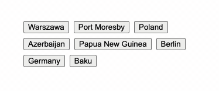

Implement a game to match countries with their capitals in Angular.
Implement an Angular component that renders a simple game.
In the game, the player needs to match a country to its capital by clicking on appropriate buttons.
Your component should receive a data property in the following format (an object with the correct answer, where the keys are the names of the countries and the value of each key is the capital of the country):
<app-country-capital [data]="data" />
where data might look like this:
{ Germany: "Berlin", Azerbaijan: "Baku" }
A button should be displayed for each country and each capital. So, the example above would return four buttons: Germany, Berlin, Azerbaijan and Baku.
The buttons should be displayed in a random order.
Clicking a button should set its background color to blue (#0000ff).
Clicking another button should:
#ff0000) if a wrong pair has been selected.Assuming the previously selected pair was wrong, clicking another button should restore the default background color of the wrong pair and set the background color of the clicked button to blue (as in point 4).
When there are no buttons left, display a message: Congratulations.
import { Component, Input } from '@angular/core';
type Data = { [key: string]: string;};
@Component({
selector: 'app-country-capital',
templateUrl: `YOUR-TEMPLATE-URL`,
})
// Do not change the way the component is named and exported.
export class CountryCapitalComponent {
@Input() data;
//Use console.log() for debugging
}
data object keys and values are strings).Use the browser console for debugging.
You are expected to use Angular: 14.1.2. The only available import is at the top of your initial solution:
Correct answers in the example are:
